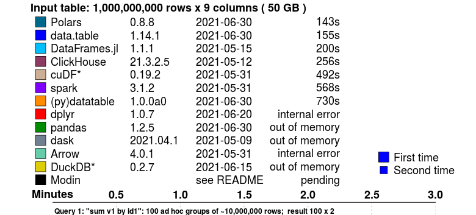
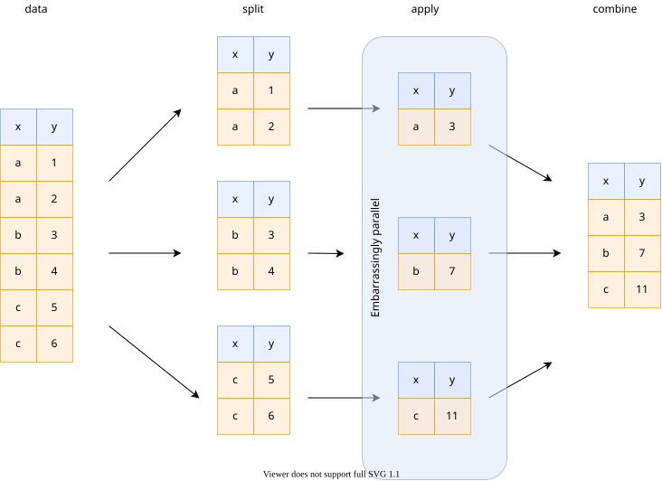

Le concept de dataframe est central pour le data scientist qui manipule des données tabulaires. En Python, Pandas est la solution de loin la plus populaire. En moyenne, le package est téléchargé 4 millions de fois par semaine, depuis des années.
Un petit nouveau apporte un vent de fraîcheur dans le domaine : Polars.
Ses atouts ? D’excellentes performances et une expressibilité qui le rapproche d’un dplyr.
Ce post de blog revient sur les principaux atouts de Polars, sans vouloir être exhaustif. Un notebook illustrant les principales fonctionnalités du package vise à le compléter :

Les secrets de la performance
Les benchmarks disponibles sont clairs : Polars est un ours qui court vite !
Le benchmark suivant, effectué par H2O, propose un comparatif de la vitesse des principaux frameworks de manipulation de données pour effectuer une agrégation par groupe avec un jeu de données de 50GB:

Polars devance des solutions connues pour leur efficacité sur ce type d’opérations, comme le package R data.table. L’utilisateur habituel de Pandas ne pourrait même pas traiter ces données, qui excèdent les capacités computationnelles de sa machine.
L’évaluation lazy
Plusieurs éléments expliquent cette rapidité.
En premier lieu, Polars est conçu pour optimiser les requêtes : grâce au mode lazy (“paresseux”), on laisse la possibilité au moteur d’analyser ce qu’on souhaite faire pour proposer une exécution optimale (pour la lecture comme pour la transformation des jeux de données). La lazy evaluation est une méthode assez commune pour améliorer la vitesse des traitements et est utilisée, entre autres, par Spark.
Du fait de la lazy evaluation il est ainsi possible, par exemple, si un filtre sur les lignes arrive tardivement, de le remonter dans l’ordre des opérations effectuées par Python afin que les opérations ultérieures ne soient effectuées que sur l’ensemble optimal de données. Ces optimisations sont détaillées dans la documentation officielle.
Lecture optimisée des fichiers
L’utilisateur Pandas est habitué à lire du CSV avec pd.read_csv. Avec Polars, il existe deux manières, très ressemblantes de le faire.
import polars as pl
# Création d'une requête
q = (
pl.scan_csv("iris.csv") # Lecture lazy
.filter(pl.col("sepal_length") > 5)
.groupby("species")
.agg(pl.all().sum())
)
# Exécution de la requête
df = q.collect()Avec cette syntaxe, les connaisseurs de Pyspark retrouveront facilement leurs petits (ours 🐻).
On peut toujours lire de manière plus directe (en mode eager, “impatient”) en utilisant la fonction read_csv, et ensuite appliquer des transformations optimisables en glissant habilement lazy :
df = pl.read_csv("iris.csv")
df_res = df.lazy() # ← ici :)
.filter(pl.col("sepal_length") > 5)
.groupby("species")
.agg(pl.all().sum())
.collect()Polars fonctionne également très bien avec le format Parquet, comme illustré dans le notebook qui accompagne ce post.
Parallélisation
Polars parallélise les traitements dès que cela est possible, notamment dans le cas d’agrégation. Chaque coeur se charge d’une partie de l’agrégation et envoie des données plus légères à Python qui va finaliser l’agrégation.

Illustration du principe de la parallélisation
Sur les systèmes proposant de nombreux coeurs, cela peut faire gagner beaucoup de temps.
Des couches basses à la pointe
Enfin, le choix d’utiliser à la fois le format de représentation en mémoire Arrow et le langage Rust pour le coeur de la bibliothèque n’est pas étranger à cette performance.
Calculs out of memory
Polars travaille vite mais présente aussi l’avantage de lire naturellement des jeux de données hors des limites de la mémoire de l’ordinateur grâce à sa capacité de lire en flux (méthode qu’on appelle le streaming).
# La même requête que tout à l'heure va lire le fichier "en flux"
df = q.collect(streaming=True)De plus, Polars lit nativement les fichiers Parquet qui par ses propriétés permet d’aller beaucoup plus vite que le CSV !
Une API fluide
C’est un reproche régulièrement fait à Pandas : la syntaxe de manipulations des données est parfois complexe ou peu lisible, et les choix d’écriture ne sont pas transparents du point de vue des performances.
L’API proposée par Polars est à la fois expressive et transparente. Voici un exemple d’exploitation de la BPE, issu du notebook accompagnant ce post :
df.lazy()
.filter(
pl.col("TYPEQU") == "B316"
)
.groupby("DEP")
.agg(
pl.count().alias("NB_STATION_SERVICE")
)
.collect()On retrouve une sémantique d’opérations de haut niveau qui s’enchaînent à la manière de ce que l’on peut faire en dplyr.
Les autres concurrents
Pandas et Polars ne sont pas seuls dans le grand zoo de la manipulation de données en Python : des solutions comme Vaex ou Dask ont des arguments à faire valoir. DuckDB, un autre framework de manipulation de données, s’intègre quand à lui très bien avec Polars dans la ménagerie.
Le duo DuckDB-Polars illustré par Dall-E-2
Ressources supplémentaires
- Awesome Polars par Damien Dotta (INSEE)
- Polars pour R
- rhosignal.com/tags/polars/
- kevinheavey.github.io/modern-polars/
Le notebook accompagnant ce post: